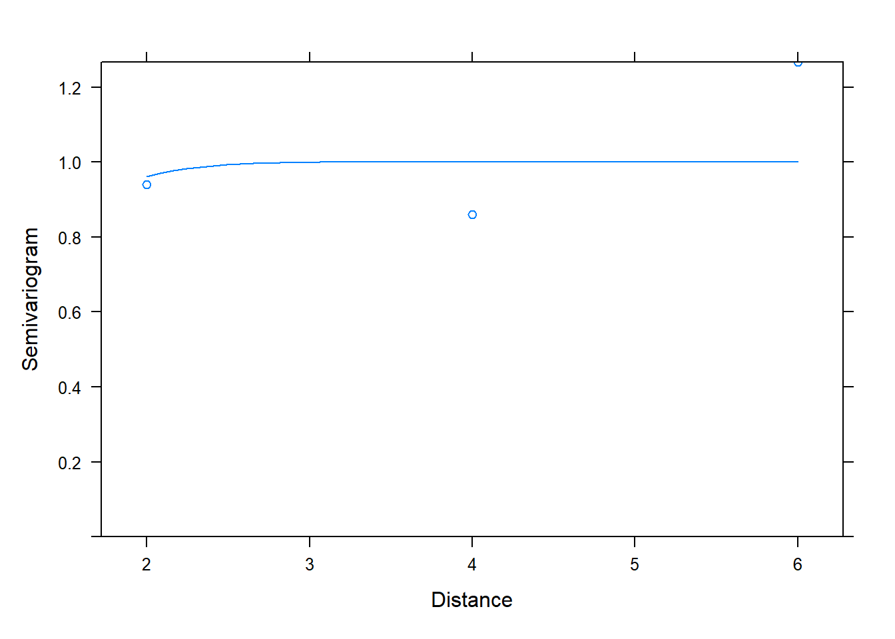
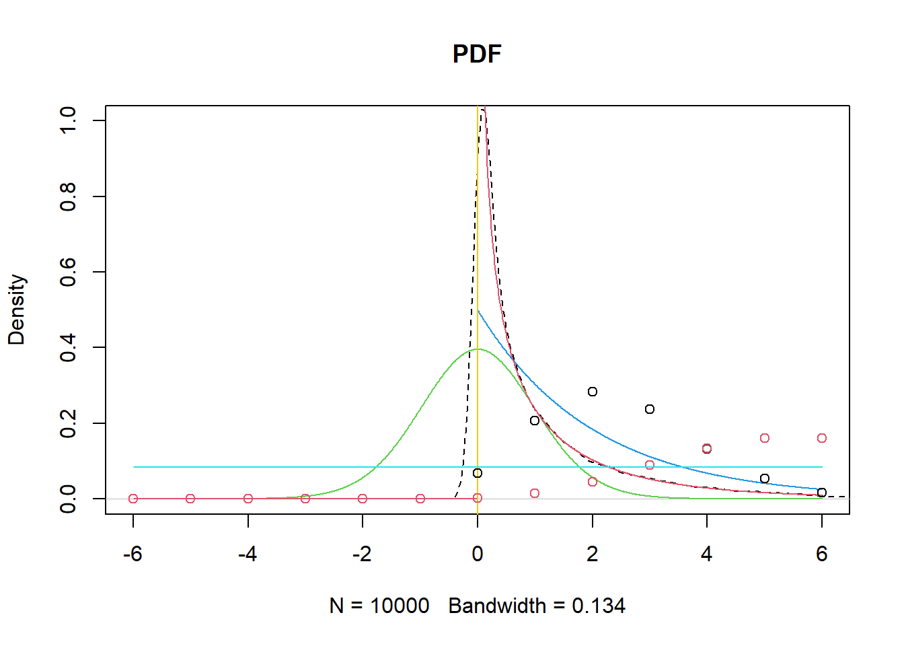

7 Probability
7.1 Probability basics
7.1.1 Events
Probability is the likelihood of an outcome. e.g. {any combination of two dice}
Event is a collection of outcomes. e.g. {both dice show the same face}
The outcome space is all the possible outcomes. e.g. {all the possible outcomes die show}
7.1.2 Probability formulas
discrete variable
\[ P(E) = \frac{number\ of\ outcomes\ in\ E}{number\ of\ possible\ outcomes} \]
continuous varable
\[ P\begin{pmatrix}a\leq X \leq b \end{pmatrix} = \int_a^b f(x) dx \] Probabilities of continuous random variables (X) are the area under the curve. The probability of any value is always zero. when X = k,
\[ P\begin{pmatrix}X = k \end{pmatrix} = 0 \]
7.1.3 Calculation of probability (operations)
union probability, addition rule +
\[
\begin{aligned}
&P(A \cup B)=P(A)+P(B)-P(A \cap B) \\
&P(A \cup B)=P(A)+P(B) \quad \text { if } \mathrm{A} \text { and } \mathrm{B} \text { are mutually exclusive }
\end{aligned}
\]
joint probability, multiple rule x
\[
\begin{aligned}
&P(A \cap B)=P(A \mid B) P(B)=P(B \mid A) P(A) \\
&P(A \cap B)=P(A) P(B) \quad \text { if } \mathrm{A} \text { and } \mathrm{B} \text { are independent }
\end{aligned}
\]
Marginal Probability is without reference to any other event or events
\[
P(A) or P(B)
\]
conditional Probability
\[
P(A\mid B)=\dfrac{P(A \: \cap\: B)}{P(B)}
\]
p-values are conditional probabilities.
7.1.4 Bayes’s theorem
multiple law \[ P(A \cap B) = P(A\ |\ B) P(B) = P(B\ |\ A) P(A) \]
bayes’s formula
\[ P(B_j\ |\ A) = \frac{P(A\ |\ B_j) P(B_j)}{P(A)}\ \]
- law of total probability \(P(A)\)
\[ P(A) = P(A\ |\ B_1) P(B_1) + \cdots + P(A\ |\ B_n) P(B_n).\notag \]
7.1.5 Random variables and distribution functions
Random variable takes on different values determined by chance. we can use random variables’ mathematical (distribution) function to find their probability.
- probability mass function (PMF, discrete), e.g. Binomial Distribution. upon some conditions are satisfied, the sampling distribution of the sample proportion is approximately normal.
- Probability Density Function (PDF, continuous), e.g. normal distribution, t, chi-squre, f…
- Cumulative Distribution Function (CDF).
7.1.6 Probability distribution
joint distribution, discrete variables
\[
P\left(X=x_{i}, Y=y_{j}\right)=p_{i j}, i, j=1,2, \ldots
\]
Marginal distribution, discrete variables
\[
P\left(X=x_{i}\right)=\sum_{j=1}^{\infty} p_{i j}=p_{i}, i=1,2, \ldots
\]
conditional probability, discrete variables
\[
P\left(Y=y_{j} \mid X=x_{i}\right)=\frac{p_{i j}}{p_{i}}, j=1,2, \ldots
\]
7.1.7 Conditional expectation
Conditional expectation is the mathematical expectation of a conditional distribution.
The discrete variable
\[ E(Y|X_i)=\sum_{i=1}^{N}{(Y_i|X_i)}\cdot p(Y_i|X_i) \]
The continuous variable
\[ E(Y|X)=\int{(Y|X)}\cdot g(Y|X)dY \]
expectation formula, discrete variable
\[
\mu=E(X)=\sum x_if(x_i)
\]
7.1.8 Conditional variance
variance formula, discrete variable
\[
\sigma^2=\text{Var}(X)=\sum (x_i-\mu)^2f(x_i)
\]
Conditional expectation and conditional variance exist and can be estimated by regression models.
7.1.9 Sampling
We make inferences about the population based on the sample (inference) after summarizing data (description).
The error is resulting from using a sample characteristic (statistic) to estimate a population characteristic (parameter).
Standard Error
\[
SD(\bar{X})=SE(\bar{X})=\dfrac{\sigma}{\sqrt{n}}
\]
Central limit theorem and law of large numbers
For a large sample size, x mean is approximately normally distributed, regardless of the distribution of the population one samples from. so, the population parameter can be estimated using the sample.
With large samples, The mean of the sampling distribution is very close to the population mean.
7.2 Probability R practice
- pros: don’t need complicated probability theory, easy (simulation)
- cons: hard to get the exact solution
7.2.2 Derivation
fxy = expression(2*x^2+y+3*x*y^2)
dxy = deriv(fxy, c("x", "y"), func = TRUE)
dxy(1,2) ## [1] 16
## attr(,"gradient")
## x y
## [1,] 16 137.2.3 Create random variables with specific distributions
dnorm(0)# density at a number ## [1] 0.3989423 pnorm(1.28)# cumulative possibility ## [1] 0.8997274 qnorm(0.95)# quantile## [1] 1.644854 rnorm(10)# random numbers## [1] -0.1960954 -0.6226706 1.9647829 -0.3028613 0.6063094 -0.3114346
## [7] 0.9203732 -1.3255641 0.3996609 0.2477700using covariance matrix to generate Gaussian multiple variables
library(MASS)
Sigma <- matrix(c(10,3,3,2),2,2)
mvrnorm(n=20, rep(0, 2), Sigma)| 1.1966051 | 0.7503701 |
| 0.5866985 | -1.2388653 |
| -1.4909270 | 1.0553603 |
| -1.5332388 | -0.9982745 |
| 4.4648343 | 1.2246606 |
| -1.2666429 | -0.2527817 |
| 5.6416318 | 0.8990023 |
| 0.9651718 | 0.3110785 |
| -2.3932273 | -1.6725040 |
| -1.9635546 | -1.7538956 |
| -3.6660685 | -3.7862973 |
| -1.0203916 | -1.5480827 |
| -1.5638779 | 1.5222195 |
| -4.7849416 | -1.8680270 |
| 0.0683867 | 1.3832235 |
| 4.3041787 | 0.3343417 |
| -0.4470743 | -1.0450497 |
| 0.3749548 | -0.4158789 |
| 1.6331491 | 0.0503997 |
| -3.3541999 | 1.6051076 |
7.2.4 Prob function
pnorm(1.96, 0,1)## [1] 0.9750021qnorm(0.025, 0,1)## [1] -1.959964pchisq(3.84,1,lower.tail=F)## [1] 0.05004352mean(rchisq(10000,1)>3.84) #simulation ## [1] 0.05087.2.5 Vector and operations
seq(1,10, 2)## [1] 1 3 5 7 9x=rep(1:3,6)
x## [1] 1 2 3 1 2 3 1 2 3 1 2 3 1 2 3 1 2 3y=rep(1:3, each = 6)
y## [1] 1 1 1 1 1 1 2 2 2 2 2 2 3 3 3 3 3 3x+y## [1] 2 3 4 2 3 4 3 4 5 3 4 5 4 5 6 4 5 6x-y## [1] 0 1 2 0 1 2 -1 0 1 -1 0 1 -2 -1 0 -2 -1 0x*y## [1] 1 2 3 1 2 3 2 4 6 2 4 6 3 6 9 3 6 9x/y## [1] 1.0000000 2.0000000 3.0000000 1.0000000 2.0000000 3.0000000 0.5000000
## [8] 1.0000000 1.5000000 0.5000000 1.0000000 1.5000000 0.3333333 0.6666667
## [15] 1.0000000 0.3333333 0.6666667 1.0000000x%*%y| 72 |
7.2.6 Select and substitute elements of vector
x[c(2,3)]## [1] 2 3x[-1]## [1] 2 3 1 2 3 1 2 3 1 2 3 1 2 3 1 2 3x[x>2]## [1] 3 3 3 3 3 3x[x==2]## [1] 2 2 2 2 2 2# substitute
x[x == 2] <- 0.5
x## [1] 1.0 0.5 3.0 1.0 0.5 3.0 1.0 0.5 3.0 1.0 0.5 3.0 1.0 0.5 3.0 1.0 0.5 3.07.2.7 Matrix and operations
matrix(1:10,2,5)| 1 | 3 | 5 | 7 | 9 |
| 2 | 4 | 6 | 8 | 10 |
matrix(1:10,5,2)| 1 | 6 |
| 2 | 7 |
| 3 | 8 |
| 4 | 9 |
| 5 | 10 |
a <- matrix(12:20,3,3)
a[2,]## [1] 13 16 19a[,2]## [1] 15 16 17a[-2,]| 12 | 15 | 18 |
| 14 | 17 | 20 |
a[,-2]| 12 | 18 |
| 13 | 19 |
| 14 | 20 |
a[2,1]=21
a | 12 | 15 | 18 |
| 21 | 16 | 19 |
| 14 | 17 | 20 |
7.2.8 Compute inverse, determinant and eigen values of matrix
a<-matrix(c(11,21,31,21,32,43,12,32,54),3,3)
solve(a)| -1.9775281 | 3.471910 | -1.6179775 |
| 0.7977528 | -1.247191 | 0.5617978 |
| 0.5000000 | -1.000000 | 0.5000000 |
det(a)## [1] -178solve(a)*det(a)| 352 | -618 | 288 |
| -142 | 222 | -100 |
| -89 | 178 | -89 |
t(a)| 11 | 21 | 31 |
| 21 | 32 | 43 |
| 12 | 32 | 54 |
eigen(a)## eigen() decomposition
## $values
## [1] 91.6892193 5.6541299 -0.3433491
##
## $vectors
## [,1] [,2] [,3]
## [1,] -0.2573423 -0.7530908 -0.9049786
## [2,] -0.5253459 -0.1712782 0.3538153
## [3,] -0.8110405 0.6352306 0.23628067.2.9 Dataframe
name<-c('A','B','C')
chinese<-c(92,96,95)
math<-c(86, 85, 92)
score<-data.frame(name, chinese, math)
score| name | chinese | math |
|---|---|---|
| A | 92 | 86 |
| B | 96 | 85 |
| C | 95 | 92 |
score[2]| chinese |
|---|
| 92 |
| 96 |
| 95 |
score$math## [1] 86 85 927.2.10 Solve problems using simulation
for loop
sim<-10000
p<-numeric(sim)
# numeric=NULL
for (i in 1:sim){
p[i]<- abs(mean(rnorm(10,20,sqrt(3)))-mean(rnorm(15,20,sqrt(3))))<0.1
}
mean(p)## [1] 0.1115using replicate
mean(replicate(10000,abs(mean(rnorm(10,20,sqrt(3)))-mean(rnorm(15,20,sqrt(3))))<0.1))## [1] 0.1151using apply function
A<-matrix(rnorm(250000, 20,sqrt(3)),10000,25)
head(A)| 19.06126 | 20.81637 | 21.21042 | 19.95590 | 21.69846 | 18.29432 | 21.82770 | 18.76974 | 21.75469 | 21.10167 | 20.44127 | 19.08609 | 21.82262 | 20.92953 | 19.95200 | 21.11685 | 21.71785 | 18.60129 | 17.37932 | 18.43603 | 16.98873 | 18.16106 | 19.47008 | 16.81116 | 19.04474 |
| 21.43252 | 18.66127 | 20.71977 | 17.67351 | 20.65143 | 18.21753 | 16.08327 | 17.76197 | 21.77523 | 20.16426 | 21.63607 | 21.76520 | 16.32750 | 21.32716 | 19.39818 | 18.67702 | 19.14233 | 22.04621 | 21.73406 | 18.01110 | 20.33225 | 17.57646 | 20.82280 | 18.94702 | 21.05311 |
| 20.32921 | 19.50025 | 19.27749 | 22.84692 | 23.77889 | 20.12394 | 21.56154 | 21.56257 | 21.46917 | 18.15418 | 22.87068 | 22.25317 | 19.48977 | 21.47643 | 22.71880 | 20.01259 | 20.38784 | 20.49415 | 17.87627 | 19.00707 | 23.81232 | 19.00066 | 17.29624 | 21.35546 | 19.44918 |
| 19.72061 | 23.10872 | 19.42933 | 22.42458 | 22.48210 | 21.00183 | 21.99800 | 21.51217 | 19.30167 | 20.10484 | 20.25181 | 19.96251 | 22.74550 | 17.23501 | 20.78454 | 19.72268 | 19.32037 | 18.86909 | 17.19450 | 18.44990 | 21.10844 | 23.41835 | 19.47133 | 18.40928 | 22.09972 |
| 20.69447 | 22.24489 | 20.82483 | 19.62620 | 19.29607 | 19.15197 | 19.83745 | 21.07063 | 19.15482 | 17.75430 | 19.20044 | 18.26481 | 20.24717 | 16.00542 | 20.14961 | 21.53620 | 19.16235 | 17.06883 | 20.50845 | 20.52393 | 18.86387 | 21.14049 | 21.54363 | 23.30348 | 20.16277 |
| 20.26250 | 21.74331 | 19.55805 | 18.49223 | 23.49000 | 20.41913 | 19.05200 | 20.50605 | 19.33760 | 22.77407 | 19.79208 | 19.97451 | 18.47463 | 20.98751 | 22.06745 | 21.64389 | 24.27560 | 19.18268 | 21.74913 | 19.90141 | 17.20166 | 15.12476 | 20.79505 | 20.05493 | 19.15534 |
f<-function(x) {abs(mean(x[1:10])-mean(x[11:25]))}
# solve the mean by apply
mean(apply(A,1,f)>0.1)## [1] 0.89using probability method
pnorm(0.1,0,sqrt(0.5))-pnorm(-0.1,0,sqrt(0.5))## [1] 0.11246297.2.11 Permutations and combinations
choose(10,2)## [1] 45# combn(10,2)
factorial(10)## [1] 3628800prod(1:10)## [1] 36288007.2.12 Search value position in vector
a<-c(1,2,3,5,0,9)
which(a==min(a))## [1] 5sum(a)## [1] 20unique(a)## [1] 1 2 3 5 0 9length(a)## [1] 6min(a)## [1] 0max(a)## [1] 9all(c(3,4) %in% a)## [1] FALSE7.2.13 Solve directly and optimize
plot and find the range of solve
f<-function(x){x^2-exp(x)}
uniroot(f,c(-0.8,-0.6)) $root## [1] -0.7034781f2<-function(x){abs(x^2-exp(x))}
optimize (f2,lower=-0.8,upper=-0.6)$minimum## [1] -0.7034797.2.14 Calculate probability using simulation method
questions: randomly select 3 numbers out of 1:10, the sum is 9.
badge<-1:10
sim<-10000
p<-numeric(sim)
for (i in 1:sim){ a<-sample(badge,3,replace=F)
p[i]<-sum(a)==9 }
mean(p)## [1] 0.0241questions: eat three flavors tangyuan.
Tangyuan<-c(rep('A',8),rep('B',8),rep('C',8))
sim<-10000
p<-numeric(sim)
# how to do it according to the condition
for (i in 1:sim){
a<-sample(Tangyuan,24,replace=F)
p[i]<-(length(unique(a[1:6]))==3)&(length(unique(a[7:12]))==3)&(length(unique(a[13:18]))==3)&(length(unique(a[19:24]))==3)
}
mean(p)## [1] 0.4842question: select 2 balls when they are the same color.
box1<-c(rep('white',5), rep("black",11), rep('red',8))
box2<-c(rep('white',10), rep("black",8), rep('red',6))
sim<-10000
p<-numeric(sim)
for (i in 1:sim){
a<-sample(box1, 1)
b<-sample(box2, 1)
p[i]<- a==b
}
mean(p)## [1] 0.3275select after putting them back
box<-c(rep("white",4),rep("red",2))
sim<-10000
t<-numeric(sim)
for (i in 1:sim){
a<-sample(box, 2 ,replace=T)
# there are two white balls
t[i]<-length(a[a=="white"])==2
}
mean(t)## [1] 0.4447question: two students have the same birthday out of 30 students
n<-30
sim<-10000
t<-numeric(sim)
for (i in 1:sim){
a<-sample(1:365, n, replace=T)
t[i]<-n-length(unique(a))
}
1-mean(t==0)## [1] 0.7056# probability
1-prod(365:(365-30+1))/365^30## [1] 0.7063162An event is a set of outcomes. You can describe certain events using random variables (x, distribution). the distribution of random variable function.
7.2.15 Discrete random variable
question: choose correct one out of four answers
x<-0:5
y<-dbinom(x,5,1/4)
plot(x,y,col=2,type='h')- using plot
the probability of shooting is 0.02, what is the most likelihood of hit with 400 shootings
k<-0:400
p<-dbinom(k,400,0.02)
plot(k,p,type='h',col=2)plot(k,p,type='h',col=2,xlim=c(0,20))dbinom(7,400,0.02)## [1] 0.1406443dbinom(8,400,0.02)## [1] 0.14100317.2.16 Exponent distribution
question: lifetime of a light (lamda=1/2000)
integrate(dexp,rate=1/2000,1000,Inf)$value## [1] 0.6065307f<-function(x){dexp(x,rate=1/2000)}
integrate(f,1000,Inf) $value## [1] 0.60653071-pexp(1000,rate=1/2000)## [1] 0.6065307mean(rexp(10000,rate=1/2000)>1000)## [1] 0.60097.2.17 Normal distribution plot
continue variable
x<-seq(-3,3,0.01)
plot(x, dnorm(x,mean=0, sd=2),type="l",xlab="x",ylab = "f(x)", col=1,lwd=2,ylim=c(0,1)) #density function
lines(x, dnorm(x,mean=0, sd=1),lty=2, col=2,lwd=2)
lines(x, dnorm(x,mean=0, sd=0.5), lty=3,col=3,lwd=2)
exbeta<-c(expression(paste(mu,"=0,", sigma,"=2")), expression(paste(mu,"=0,",sigma,"=1")), expression(paste(mu,"=0,", sigma,"=0.5")))
legend("topright", exbeta, lty = c(1, 2,3),col=c(1,2,3),lwd=2)x<-seq(-3,3,0.01)
plot(x, dnorm(x,mean=-1, sd=1),type="l",xlab="x",ylab = "f(x)", col=1,lwd=2,ylim=c(0,0.6))
lines(x, dnorm(x,mean=0, sd=1),lty=2, col=2,lwd=2)
lines(x, dnorm(x,mean=1, sd=1), lty=3,col=3,lwd=2)
exbeta<-c(expression(paste(mu,"=-1,", sigma,"=1")), expression(paste(mu,"=0,",sigma,"=1")), expression(paste(mu,"=1,", sigma,"=1")))
legend("topright", exbeta, lty = c(1, 2,3),col=c(1,2,3),lwd=2)
question: solve sigma using nomoral distribution
sigma<-1
repeat{
sigma<-sigma+0.01
if (pnorm(200,160,sigma)-pnorm(120,160,sigma)<0.80) break
}
sigma## [1] 31.22# alternative
sigma<-1
while( pnorm(200,160,sigma)-pnorm(120,160,sigma)>=0.80){sigma<-sigma+0.01}
sigma## [1] 31.227.2.18 Distribution of random variable function
qestion: x^2 and 2x distributions
x<-c(-1,0,1,2,2.5)
weight<-c(0.2,0.1,0.1,0.3,0.3)
toss<-sample(x,10000,replace=T,weight)
table(toss^2)/length(toss^2)| 0 | 1 | 4 | 6.25 |
|---|---|---|---|
| 0.1029 | 0.2966 | 0.2994 | 0.3011 |
table(2*toss)/length(2*toss)| -2 | 0 | 2 | 4 | 5 |
|---|---|---|---|---|
| 0.2008 | 0.1029 | 0.0958 | 0.2994 | 0.3011 |
quetsion: continous vairable density
x <- seq(0,5,0.01)
truth<-rep(0,length(x))
truth[0<=x&x<1]<-2/3
truth[1<=x&x<2]<-1/3
plot(density(abs(runif(1000000,-1,2))),main=NA, ylim=c(0,1),lwd=3,lty=3)
lines(x,truth,col="red",lwd=2)
legend("topright",c("True Density","Estimated Density"), col=c("red","black"),lwd=3,lty=c(1,3))7.2.19 Join and margin probability
question: x is randomly selected from 1:4, y randomly select from x
p<-function(x,y) {
sim<-10000
t<-numeric(sim)
for (i in 1:sim) {
a<-sample(1:4,1)
b<-sample(1:a,1)
t[i]<-(a==x)&(b==y) }
mean(t)
}
PF<-matrix(0,4,4)
for (i in 1:4) {
for (j in 1:4) {
PF[i,j]<-p(i, j) } }
PF| 0.2439 | 0.0000 | 0.0000 | 0.0000 |
| 0.1217 | 0.1228 | 0.0000 | 0.0000 |
| 0.0838 | 0.0831 | 0.0857 | 0.0000 |
| 0.0638 | 0.0644 | 0.0634 | 0.0625 |
apply(PF,1,sum)## [1] 0.2439 0.2445 0.2526 0.2541apply(PF,2,sum)## [1] 0.5132 0.2703 0.1491 0.06257.2.20 Multiple random variables plots
2 discrete variables distribution
x<-sample(1:4, 10000, replace=T, prob=c(1/4, 1/4, 1/4, 1/4))
y<-numeric(10000)
for(i in 1:10000) {
if(x[i]==1) {y[i]<-sample(1:4,1,replace=T, prob=c(1,0,0,0))}
if(x[i]==2) {y[i]<-sample(1:4,1,replace=T, prob=c(1/2,1/2,0,0))}
if(x[i]==3) {y[i]<-sample(1:4,1,replace=T, prob=c(1/3,1/3,1/3,0))}
if(x[i]==4) {y[i]<-sample(1:4,1,replace=T, prob=c(1/4,1/4,1/4,1/4))}
}
z1<-x+y
table(z1)/length(z1)| 2 | 3 | 4 | 5 | 6 | 7 | 8 |
|---|---|---|---|---|---|---|
| 0.2496 | 0.1224 | 0.2142 | 0.1421 | 0.1472 | 0.0644 | 0.0601 |
z2<-x*y
table(z2)/length(z2)| 1 | 2 | 3 | 4 | 6 | 8 | 9 | 12 | 16 |
|---|---|---|---|---|---|---|---|---|
| 0.2496 | 0.1224 | 0.0867 | 0.1896 | 0.08 | 0.0661 | 0.0811 | 0.0644 | 0.0601 |
z3<-pmax(x,y)
table(z3)/length(z3)| 1 | 2 | 3 | 4 |
|---|---|---|---|
| 0.2496 | 0.2499 | 0.2478 | 0.2527 |
z4<-x/y
table(z4)/length(z4)| 1 | 1.33333333333333 | 1.5 | 2 | 3 | 4 |
|---|---|---|---|---|---|
| 0.5183 | 0.0644 | 0.08 | 0.1885 | 0.0867 | 0.0621 |
two normal distributions
X～N(0,1),Y～N(0,1), Z=X+Y, therefre Z~N(0,2)
Z<-function(n){
x<-seq(-4,4,0.01)
truth<-dnorm(x,0,sqrt(2))
plot(density(rnorm(n)+rnorm(n)),main="Density Estimate of the Normal Addition Model",ylim=c(0,0.4),lwd=2,lty=2)
lines(x,truth,col="red",lwd=2)
legend("topright",c("True","Estimated"),col=c("red","black"),lwd=2,lty=c(1,2))
}
Z(10000)7.2.21 Generate a circle using simulated random dots
D={(x,y)|x^2 + y^2 <= 1}
x<-runif(10000,-1,1)
y<-runif(10000,-1,1)
a<-x[x^2+y^2<=1]
b<-y[x^2+y^2<=1]
plot(a,b,col=4)oval
a<-3
b<-1
x<-runif(10000,-a,a)
y<-runif(10000,-b,b)
x1<-x[x^2/a^2+y^2/b^2<=1]
y1<-y[x^2/a^2+y^2/b^2<=1]
plot(x1,y1,col=3)
7.2.22 Expectation
discrete variable
question: the benefit of products is different.
sim<-10000
t<-numeric(sim)
for (i in 1:sim) {
Y<-1500
X<-rexp(1,rate=1/10)
Y[1<X&X<=2]<-2000
Y[2<X&X<=3]<-2500
Y[3<X]<-3000
t[i]<-Y
}
mean(t)## [1] 2734.35continue variable
7.2.23 Central Limit Theorem
###Central Limit Theorem for Expotential distribution
layout(matrix(c(1,3,2,4 ),ncol=2))
r<-1000
lambda<-1/100
for (n in c(1,5,10,30)){
mu<-1/lambda
xbar<-numeric(r)
sxbar<-1/(sqrt(n)*lambda)
for(i in 1:r){
xbar[i]<-mean(rexp(n,rate=lambda))
}
hist(xbar,prob=T,main=paste('SampDist.Xbar,n=',n),col=gray(.8))
Npdf<-dnorm(seq(mu-3*sxbar,mu+3*sxbar,0.01),mu,sxbar)
lines(seq(mu-3*sxbar,mu+3*sxbar,0.01),Npdf,lty=2,col=2)
box()
}#####The central limit theorem for uniform distribution
layout(matrix(c(1,3,2,4),ncol=2))
r<-10000
mu<-5
sigma<-10/sqrt(12)
for (n in c(1,5,10,30)){
xbar<-numeric(r)
sxbar<-sigma/sqrt(n)
for (i in 1:r){
xbar[i]<-mean(runif(n,0,10))}
hist(xbar,prob=T,main=paste('SampDist.Xbar,n=',n),col=gray(0.8),ylim=c(0,1/(sqrt(1*pi)*sxbar)))
XX<-seq(mu-3*sxbar,mu+3*sxbar,0.01)
Npdf<-dnorm(XX,mu,sxbar)
lines(XX,Npdf,lty=2,col=2)
box()}7.2.24 Law of large numbers
N <- 5000
set.seed(123)
x <- sample(1:10, N, replace = T)
s <- cumsum(x)
r.avg <- s/(1:N)
options(scipen = 10)
plot(r.avg, ylim=c(1, 10), type = "l", xlab = "Observations"
,ylab = "Probability", lwd = 2)
lines(c(0,N), c(5.5,5.5),col="red", lwd = 2)
7.2.25 Empirical distribution
x<-c(-2,-1.2,1.5,2.3,3.5)
plot(ecdf(x),col=2)
abline(v=0,col=3)question: three numbers are from N(2,9), and what is the prob of their mean >3?
A<-matrix(rnorm(30000,2,3),10000,3)
mean(apply(A,1,mean)>3)## [1] 0.27897.2.26 Maximum likelihood estimate
question: eatimate mean and variance
sample<-c(1.38, 3.96, -0.16, 8.12, 6.30, 2.61, -1.35, 0.03, 3.94, 1.11)
n<-length(sample)
muhat<-mean(sample)
sigsqhat<-sum((sample-muhat)^2)/n
muhat## [1] 2.594sigsqhat## [1] 8.133884loglike<-function(theta){
a<--n/2*log(2*pi)-n/2*log(theta[2])-sum((sample-theta[1])^2)/(2*theta[2])
return(-a)
}
optim(c(2,2),loglike,method="BFGS")$par## [1] 2.593942 8.1303407.2.27 t distribution, F distribution plots, and common distributions
n<-30
x<-seq(-6,6,0.01)
y<-seq(-6,6,1)
Truth<-df(x,1,n)
plot(density(rt(10000,n)^2),main="PDF",ylim=c(0,1),lty=2,xlim=c(-6,6)) #simulation
lines(x, dt(x,n), col=3) #t dist
lines(x, dchisq(x,2), col=4) #chisq dist
lines(x,Truth,col=2) #f dist
abline (v=0 ,col=7)
points(y,dbinom(y, size=12, prob=0.2),col=1) #binomial dist
points(y,dpois(y, 6),col=2) #poisson dist
lines(y,dunif(-6:6,min=-6,max=6 ),col=5) #uniform